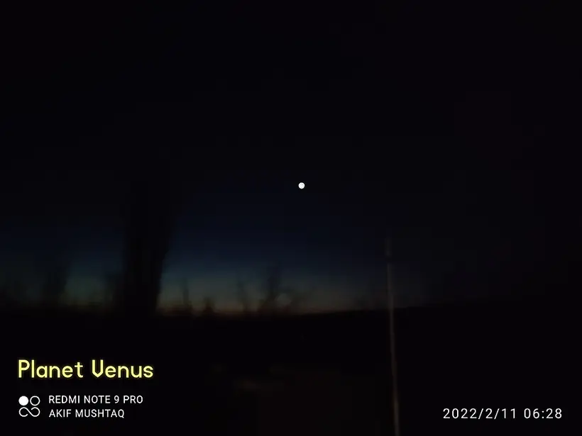
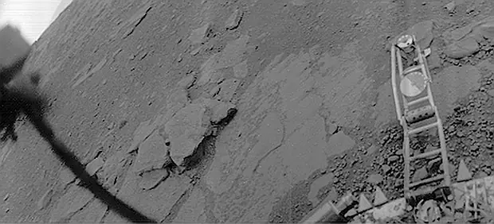
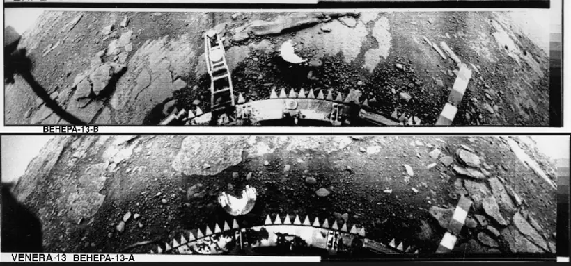

The proposal
In 1967 Carl Sagan and Harold Morowitz suggested a Venusian aerial biosphere: microbes living in cloud droplets, where the temperature is 30–70 °C and the pressure is about one atmosphere. The idea has been taken seriously because the surface is uninhabitable and the clouds are, physically, the least hostile place in the solar system after Earth.
Maps, diagrams and images






The chemistry is hostile in a different way. The droplets are 75–96% sulfuric acid, and the water activity in them is extremely low — comparable to the driest places on Earth, and far below what any known organism requires.
The phosphine claim
In September 2020 a team led by Jane Greaves reported phosphine in Venus's atmosphere at about 20 parts per billion, from two telescopes, and noted that no known abiotic process readily explains it. Phosphine is a biosignature on Earth.
The claim did not survive intact. Independent reanalyses found that the spectral feature could be explained by sulfur dioxide absorption and by calibration artefacts in the data; later work found phosphine at most at a small fraction of the original figure. The original team stood by part of the analysis, and the dispute was technical and public.
Documented: the cloud layer is physically the mildest environment off Earth.
Documented: the droplets are concentrated sulfuric acid with very low water activity.
Contested then reduced: the phosphine detection. Independent analyses found SO₂ and artefacts; the abundance is now at most a trace.
Not established: any life, or any biosignature that survives reanalysis.
Testable: yes — several Venus missions are planned, which is more than most pages in this collection can say.
Why it is in the archive
Because it is a live scientific question that was briefly reported as a discovery, and because the correction happened in public, in under a year, in the literature. That is what the process looks like when it works.
Open resources on this topic
- PapersOpen-access articles: DOAJ · PubMed Central · Internet Archive Scholar
- BooksPublic-domain and borrowable copies: Open Library · Project Gutenberg · Google Books · Internet Archive
More images
Cite this page
Momin, S. (2026). Life in Venus's Clouds. The Larger World Archive. https://drsamonline.github.io/LARGE_GLOBE/venus-clouds-life.htmlMomin, Sohil. “Life in Venus's Clouds.” The Larger World Archive, 2026, https://drsamonline.github.io/LARGE_GLOBE/venus-clouds-life.html.Momin, Sohil. “Life in Venus's Clouds.” The Larger World Archive, 2026. https://drsamonline.github.io/LARGE_GLOBE/venus-clouds-life.html.@misc{life2026venus,
author = {Momin, Sohil},
title = {Life in Venus's Clouds},
year = {2026},
howpublished = {The Larger World Archive},
url = {https://drsamonline.github.io/LARGE_GLOBE/venus-clouds-life.html},
note = {Last reviewed 20 November 2026}
}Last reviewed 20 November 2026 · Corrections policy · this page is not peer reviewed
Sources for this page
- Wikipedia, “Life on Venus” — the proposal, the phosphine claim and its fateen.wikipedia.org
- Wikipedia, “Phosphine” — the molecule and why it was interestingen.wikipedia.org
- Wikipedia, “Atmosphere of Venus” — the cloud deck and its chemistryen.wikipedia.org
- Wikipedia, “Venus” — the planet and its explorationen.wikipedia.org